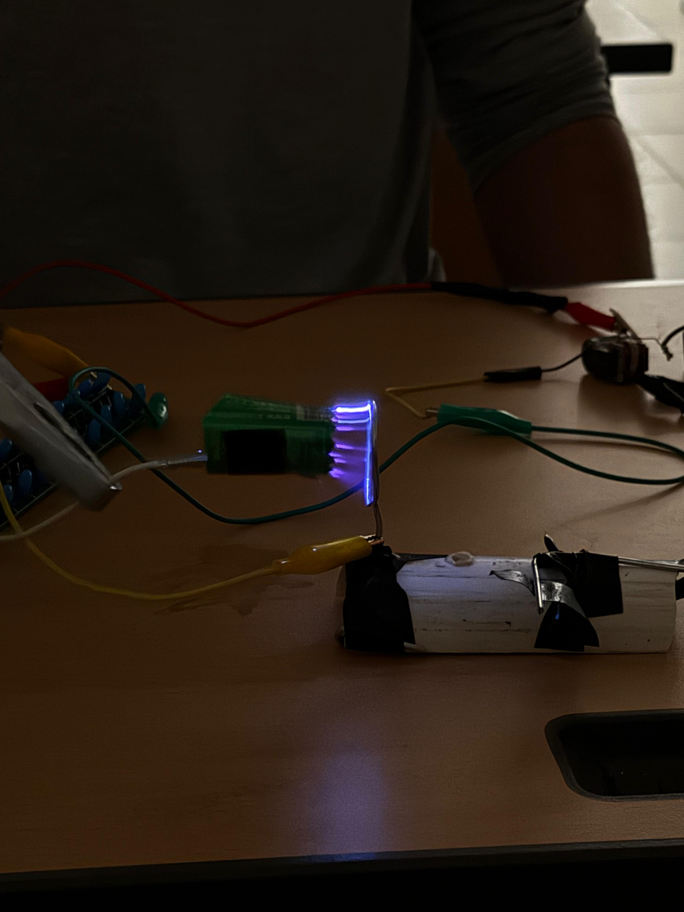
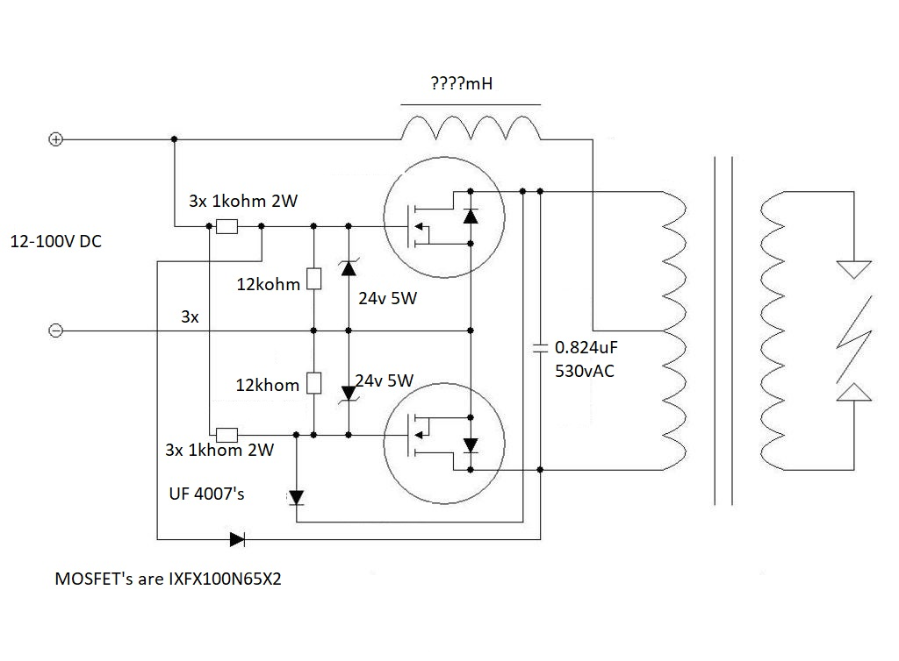
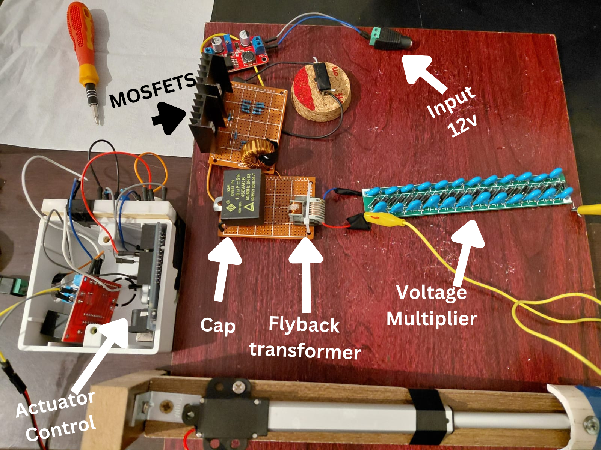
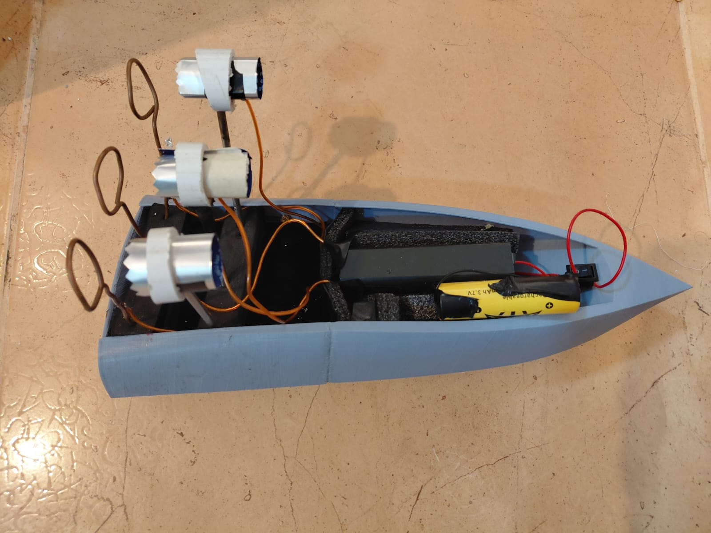
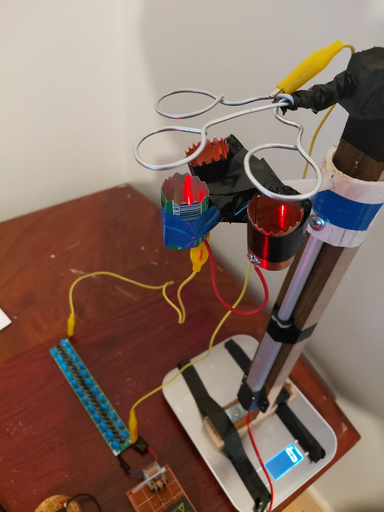
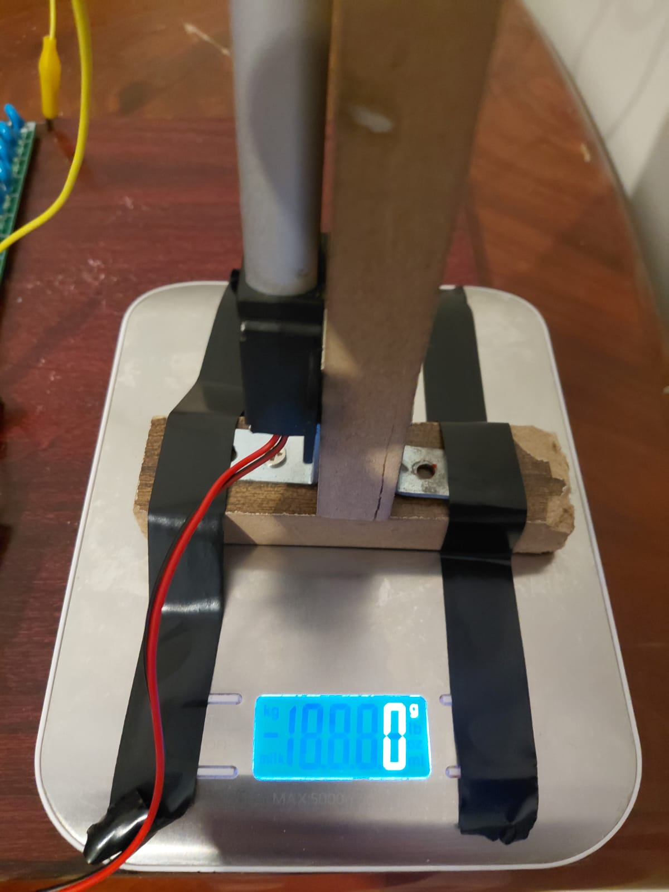

Ionic Plasma Thruster
Fuel-less Propulsion System - using space technology to sail a boat!
Overview
The Vision
Traditional marine vessels rely on mechanical propellers that inevitably introduce hydrodynamic drag, underwater acoustic pollution, and ongoing mechanical wear. This project reimagines marine propulsion by eliminating moving parts entirely. By leveraging electrohydrodynamic principles, my team and I engineered a completely solid-state propulsion system that generates thrust through atmospheric ionic wind, successfully demonstrating its viability as an alternative to conventional motorized aquatic platforms. Other possible future applications for ionic engines is the use in aircrafts and avaition since it could replace the noisy and fuel-hungry jet engines. However, so far it is mostly under research due to the little thrust is provides.
If you are interested about how recent research was able to increase the thrust of ionic engines:
🔗 Jet propulsion by microwave air plasma in the atmosphere featuredThe Technology
At the core of this propulsion system is a custom-built high-voltage generator. Utilizing a Zero Voltage Switching (ZVS) driver powered by a compact 12V lithium-ion battery, the circuit steps up the input to exceed 40kV. This intense electrical field arcs across specially engineered circular electrodes. We specifically optimized this circular geometry to maximize the generation of plasma, effectively ionizing the surrounding air and creating a sustained molecular drift. This ionic wind serves as the primary thrust mechanism to propel the vessel forward.
The Challenge and Execution
One of the most significant engineering hurdle was miniaturizing and stabilizing a 40kV power system for a mobile, aquatic environment. To solve this, we developed a modular architecture for the high-voltage arc generators. We successfully integrated three of these independent engine modules onto a custom 3D-printed boat hull. Balancing the high-voltage requirements of the ZVS driver with the strict payload weight constraints of the power supply demanded rigorous electrical optimization. The result was a fully functional, self-contained prototype that successfully sailed using strictly aerodynamic plasma thrust. More hurdles included gathering cost effective materials, so we innovated: we used aluminium cloth hangers to create the ring-shaped electrodes for the thruster and soda cans for the sharp edged electrode that would concentrate the electric field necessary to generate 40kv! Even a capacitor inside a home electrical fan was used for the high frequency film cap inside the ZVS driver circuitry.
How It Works
Generating thrust without moving parts requires orchestrating a sequence of complex electrical and physical phenomena. The system operates in three distinct phases: highly efficient power amplification, atmospheric ionization, and momentum transfer.
1. The Power Plant: Zero Voltage Switching
The heartbeat of the thruster is the Zero Voltage Switching driver. To generate plasma, the initial 12V DC supply from the lithium-ion battery must be transformed into tens of thousands of volts. A standard switching circuit would waste massive amounts of energy as heat due to switching losses. The ZVS circuit solves this by utilizing a self-oscillating LC resonant tank. The system meticulously times the switching of its MOSFETs, ensuring they only toggle states when the voltage across them is exactly zero. Because power dissipation is the product of voltage and current (P = VI), switching when the voltage is zero results in near-zero power loss. This extreme efficiency allows the compact module to handle high power demands without thermal failure, outputting a high-frequency alternating current to the step-up transformer.

2. Atmospheric Ionization: Corona Discharge
The alternating current from the ZVS driver is fed into a high-voltage transformer, stepping the potential up to exceed 40,000 volts. This voltage is applied across our engineered circular electrodes. The magnitude of the electric field E generated between the electrodes depends on the voltage V and the gap distance d, described fundamentally as:
Because we utilize specifically designed circular electrodes, the electric field becomes highly concentrated at the curved edges. When this localized electric field surpasses the dielectric breakdown strength of air (roughly 30 kV/cm), it violently strips electrons from nearby nitrogen and oxygen molecules. This localized ionization is called corona discharge. It creates the visible, glowing purple plasma that acts as the source of our propulsion system.
This plasma phenomenon is observed at high voltage power lines as seen in the following image and is considered a power loss that engineers try to minimize in transmission high voltage lines:

3. Electrohydrodynamic Thrust: The Ionic Wind
Creating plasma alone does not move a boat. The actual propulsion relies on electrohydrodynamics. The corona discharge creates a dense cloud of positive ions near the emitting electrode. These ions are immediately propelled away by the intense electric field toward the grounded cathode. As these charged particles accelerate across the gap, they continuously collide with neutral, uncharged air molecules. Through millions of microscopic collisions, the ions transfer their kinetic energy and momentum to the neutral air. This bulk movement of air creates a sustained ionic wind. The total aerodynamic thrust F generated by this process can be approximated using the relationship between the corona current I, the gap distance d, and the mobility of the ions mu:
This ionic draft is exhausted out the back of the engine modules, creating the necessary forward thrust to sail the marine vessel entirely silently.
Ionic Wind
- Near-Zero Switching Loss: The ZVS architecture enables the use of lightweight, portable power supplies by eliminating the thermal waste typically associated with high-voltage step-up conversions.
- Optimized Electrode Geometry: The circular electrode design maximizes the localized electric field gradient, ensuring a continuous and robust corona discharge rather than sporadic, inefficient sparking.
- Scalable EHD Momentum Transfer: By arranging the engines in a modular array on the vessel, the resulting electrohydrodynamic thrust is multiplied, proving the viability of solid-state propulsion in a real-world hydrodynamic environment.
This is what the project finally looked like:

And this is the boat:

The thruster nozzle rings mounted on a kitchen food scale for testing and measuring its thrust:

A shocker 💔
A limitation of Ionic engines is that they generate such little thrust compared to cyogenic (combustion fuel) engines, Jet engines or any other engines which is why so far they have only been implemented in outer space applications where there is no gravity or air resistance, and it's were a space craft could work for such a long period of time on very little propellant (usually Argon gas since the ionic engine has no atmosphere to ionize in outer space) with solar energy only. but who knows maybe in the future someone could develop a much stronger plasma thruster capable of replacing all cyogenic engines and pushing us into outer bounderies of space!
Here is were we were left with 0 thrust:

Demo Video
Watch the system in action where we have also mounted our custom ZVS electrodes on an actuator to control its distance which allows us to control the thrust:
Outcome & Reflections
The project culminated in a highly successful demonstration of ionic propulsion. Our custom 3D-printed vessel, powered exclusively by three solid-state ZVS engine modules, achieved sustained forward motion across a water testbed. By completely eliminating mechanical propellers, we validated the concept of a silent, zero-wake, and solid-state aquatic thruster powered by a standard lithium-ion battery.
Personally, if I were to do this again, I would probably invest in much stronger electrical materials with higher metrics to be able to generate a much stronger thrust and be able to get readings out of it, but all and all, we are proud of what we created and we learned so much from this experience...